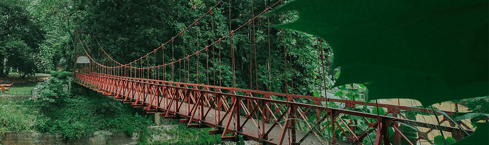

Pada mulanya kebun ini hanya akan digunakan sebagai kebun percobaan bagi tanaman perkebunan yang akan diperkenalkan di Hindia Belanda. Namun pada perkembangannya pendirian Kebun Raya Bogor bisa dikatakan mengawali perkembangan ilmu pengetahuan di Indonesia dan sebagai wadah bagi ilmuwan terutama bidang botani di Indonesia secara terorganisasi pada zaman itu (1880 - 1905)...
Flora Indonesia
Acalypha hispida Burm. f.
Ekor KucingAgeratum conyzoides (L.)
BandotanAbrus precatorius L. Family
Abrus precatorius L. Family : LeguminosaeAcer laurinum Hassk. (Araceae)
Pohon MapelTentang Kami
Sejarah Kebun Raya Bogor
